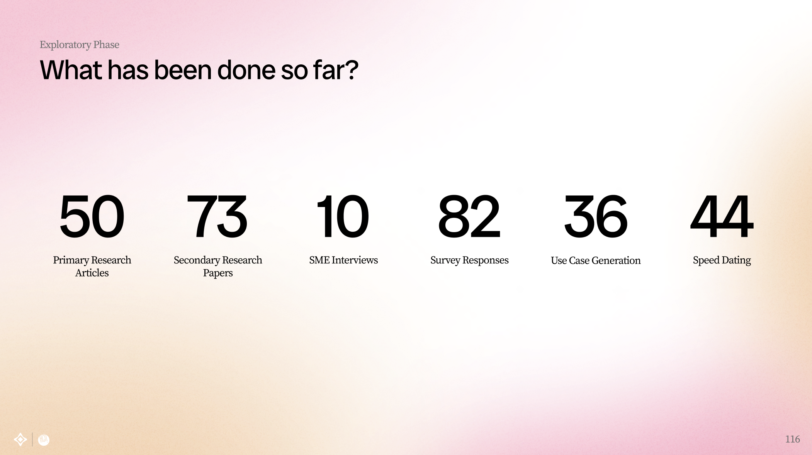
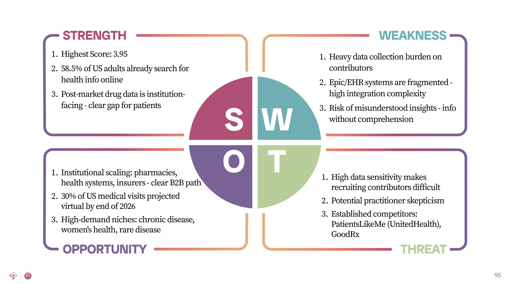
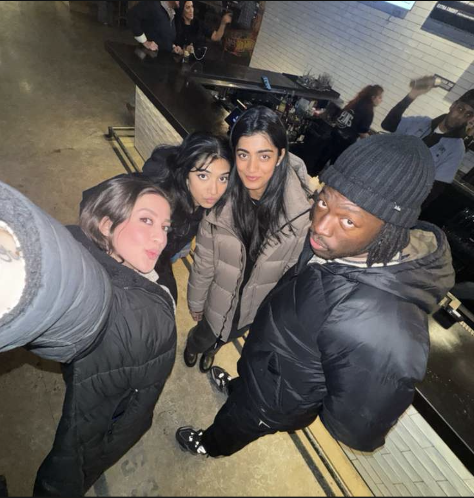
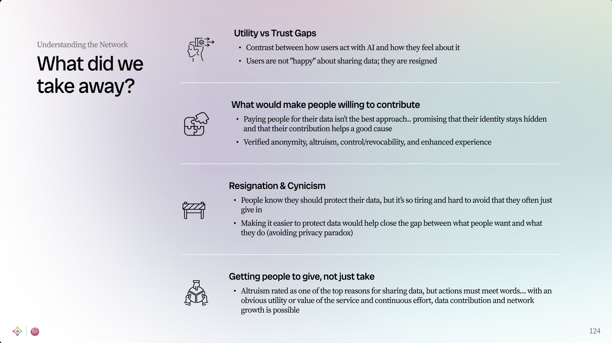
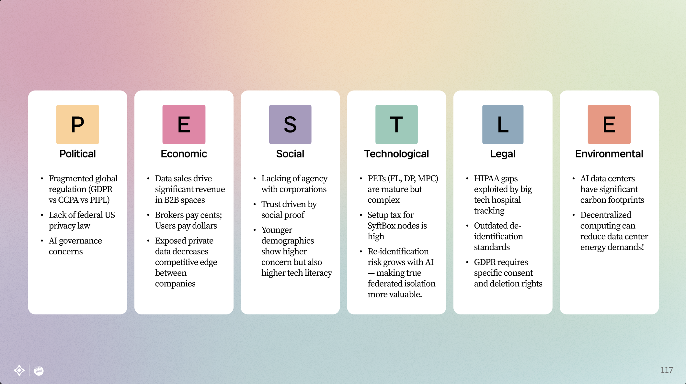
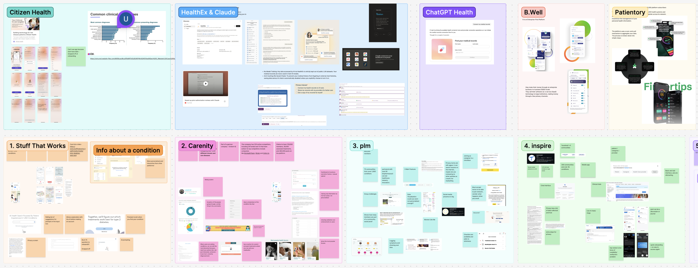
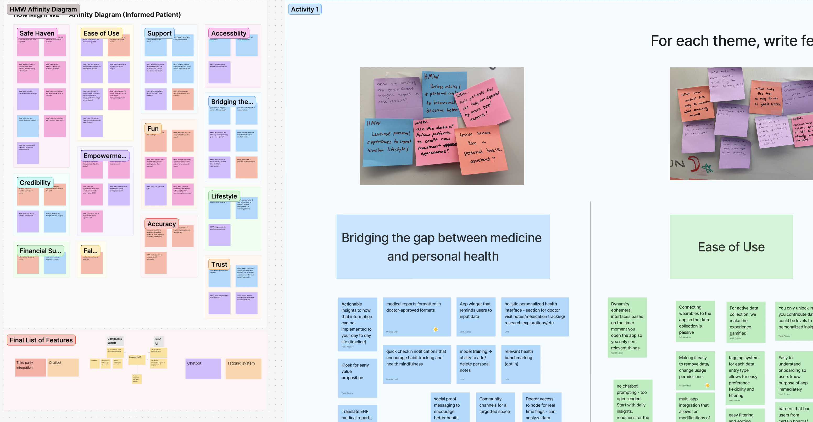

OpenMined
MHCI Capstone
Executive Summary
- Led consumer-to-consumer use-case discovery for a privacy-preserving AI, translating dense PETs (Privacy-Enhancing Technology) concepts into buildable product directions
- Co-designed with 50+ people across interviews and sessions; synthesized 275+ data points into a weighted decision framework across 36 candidate use cases
- From open ideation to a chosen use case - validated and prototyped in 2 months, and presented directly to CEO Andrew Trask, who is looking forward to the final deliverable

Context
OpenMined builds privacy-enhancing technology (PETs) that lets AI models learn from sensitive data without ever seeing it. The technology is real - but where does it create practical value for everyday people? My team's job was to find the C2C use cases worth building.
Challenge
- PETs are technically complex -understanding what's actually buildable was a prerequisite to proposing anything meaningful.
- Most "privacy" products treat it as a legal checkbox. The real opportunity was making it a legible, visible product quality.
- Evaluating use cases meant weighing real desirability against technical feasibility and strict ethical constraints -across dozens of domains simultaneously.
Research Methodology
Six methods, each chosen for a specific job. Flip a card to see why - then tap "View results" to see the artifact.
Engage subject-matter experts in privacy-enhancing technologies to ground our technical understanding.
We needed to know what's actually buildable before proposing anything. Experts caught our assumptions early and gave us technical ground truth we couldn't get from papers alone.
Synthesize academic literature, industry reports, and emerging use-case documentation across the PETs landscape.
PETs is a fast-moving field. Secondary research let us map the landscape before spending participant time on what was already known -or already abandoned.
Map political, economic, social, technological, legal, and environmental factors shaping privacy-AI adoption.
A use case that ignores regulatory barriers isn't a real use case. PESTLE forced every idea to face the world as it actually is, not as we hoped it would be.
Evaluate existing privacy-preserving solutions and their go-to-market strategies across key verticals.
Understanding what exists helped us find genuine white space -rather than proposing what competitors had already launched, failed at, or quietly dropped.
Surface and challenge the core beliefs underlying different privacy approaches, then test them against evidence.
Our most dangerous design mistakes live in our assumptions. Making them explicit let us test them deliberately instead of building them silently into every decision.
Develop detailed scenarios exploring how privacy-preserving AI could solve real problems across sectors.
Scenarios made abstract possibilities tangible enough for participants to react to -the fastest way to learn what people actually want to exist in the world.
Approach
- Mapped high-risk domains where data sensitivity and trust are mission-critical.
- Scored 36 candidate scenarios against desirability, feasibility, and ethical risk to narrow to a shortlist.
- Drafted UX concept flows showing how privacy guarantees would be made understandable in-product - not buried in settings.
Instead of treating privacy as invisible infrastructure, our solution makes protection visible where it matters most: at the moment a user is deciding whether to trust the system.

Where We Are Now
Use case selectedInformed Patient - why this use case won
We ran a weighted decision matrix across our top 8 ideas, scoring each on technology fit, market need, and regulatory barriers. Informed Patient won - the largest underserved market, with the best technology fit.
See the analysis


Accomplishments
- Presented research to the OpenMined team -CEO Andrew Trask responded enthusiastically and is looking forward to the final deliverable.
- Madhava, principal engineer leading the BioVault project, validated our technical direction.
- Interviewed and co-designed with 50+ people across the full research arc.
- In ~1 month, moved from open exploration to a chosen use case, validated it through interviews and testing, and shipped mid-fidelity prototypes.
More to come soon.





